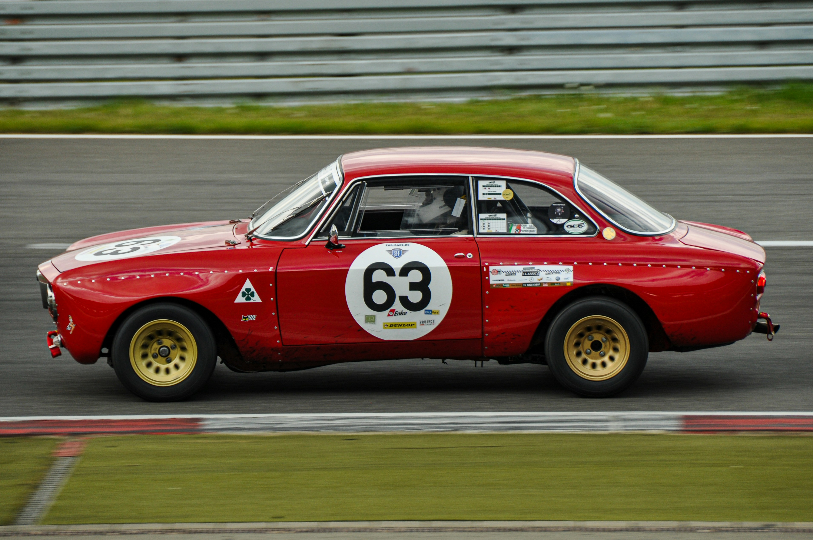

Our Story
Alfa Romeo is more than just a car brand—it’s a legacy of passion, precision, and pure driving pleasure. At the Alfa Romeo Encyclopedia, we embrace that same philosophy, crafting a knowledge hub that reflects the spirit of one of the world’s most iconic automotive names.
Just as Alfa Romeo engineers meticulously design each curve, engine note, and driving experience, we dedicate ourselves to curating a comprehensive, high-quality resource for enthusiasts, historians, and newcomers alike. Whether you’re exploring the technical marvels of the Busso V6, the racing pedigree of the 33 Stradale, or the timeless beauty of the Duetto Spider, our goal is to fuel your passion for Alfa Romeo with accuracy, depth, and admiration.
Alfa Romeo has always pursued more than just performance—it strives to evoke emotion. Likewise, our encyclopedia isn’t just a collection of facts; it’s a celebration of a brand that turns driving into an art form. We believe that every Alfa tells a story, and here, we tell them all.
Welcome to the Alfa Romeo Encyclopedia—where heritage meets passion, and knowledge drives the experience forward.